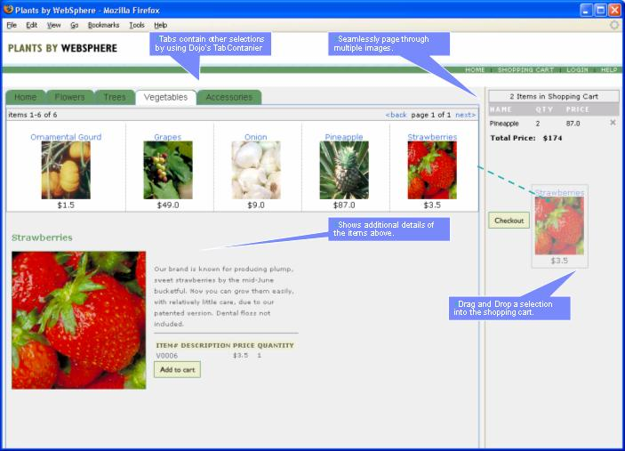
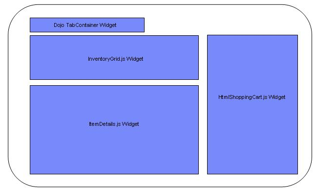

The sample application represents a fictitious online plant store where one can order and purchase flowers, trees, vegetables, and accessories. You can view an online catalog, select items, and add them to a cart. When the cart contains items, you can proceed to log in, supply credit card information, and checkout.
This version of PlantsByWebSphere Ajax Edition has been further enhanced to demonstrate the computer-telephony integration and Web collaboration widgets included with IBM® WebSphere® Application Server V8.0. For further information about the enhancements, see Introduction to Communications Enabled Applications.
The application serves as an example of a Web application that someone might attempt to develop. This application contains model, presentation, and controller layers that can be developed. Additionally, Ajax-style architecture is added through the JavaScript Dojo Toolkit. Specifically, the use of various Dojo widgets and enablement of drag-and-drop capabilities for the shopping cart are added. Figure 1.0 illustrates some of the features of the PlantsByWebSphere application.

To support drag and drop, a number of Dojo widget controls were created. The widgets include support for displaying the inventory in a grid, displaying detail information on the items and dragging items to a shopping cart. When you click check out, the content of the shopping cart widget is sent to the server for processing. The grid widget that displays the content of the catalog derives the information by issuing a request to the server using the dojo.xhr(Get,Put). The response from the server is sent back in XML format and contains detail information and a Universal Resource Locator (URL) reference to where the image is located. Figure 2.0 shows the general components discussed previously.

The PlantsByWebSphere Ajax Edition application also includes an additional adapter layer using the Remote Procedure Call Adapter (RPCAdapter). The RPCAdapter library can be used to map traditional J2EE constructs such as Enterprise Java Beans (EJBs), Web Services, and POJOs to lightweight constructs such JavaScript Object Notation (JSON) or XML data. The data can easily be consumed and rendered by JavaScript based clients using Dojo. In the case of PlantsByWebSphere Ajax Edition, the RPCAdapter is used to map client side GET requests to "legacy" EJB or Servlet session data. The data is returned as XML and used as input to construct the Dojo widgets within the browser.
Additional information on this application can be found in the following IBM developerWorks® articles: